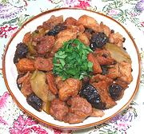

|
Chicken with Wine & FruitEngland - Elizabethan | ||||
| Serves: Effort: Sched: DoAhead: |
4 main *** 2 hrs Yes |
This English dish was around during the time of Elizabeth I. In those times sugar was very expensive, so dishes were sweetened with dried fruit. This dish is rather sweet, the way they liked them then, but it's tasty. | |||
|
|
2-1/2 1 1/2 ar ar ------- 2-1/2 ------- 1/2 1/2 3/4 1 1/2 1/2 1/4 ------- |
# t t ---- c ---- c c in lrg t t c ---- |
Chicken meat (1) Salt Pepper Flour Oil, frying (2) -- Sauce Wine white (3) -- Flavorings Prunes, pitted Dates, pitted (4) Ginger Root Apple, tart Cinnamon Nutmeg Currents ------------- |
Prep - (35 min)
|